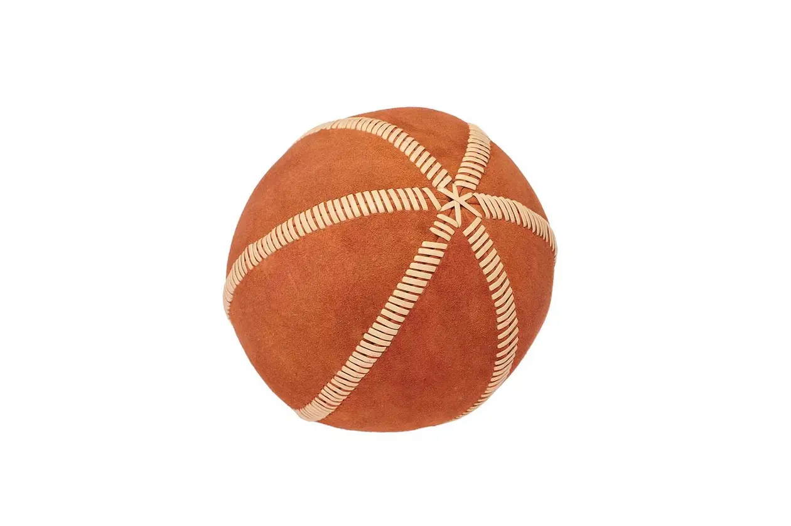

INTRODUCTION TO FOOTBALL
Football is a widely played, popular team sport involving two teams of 11 players trying to score by moving a ball into the opposing net, primarily using their feet. Known as soccer in some regions, this game is governed by the Fédération Internationale de Football Association (FIFA). The game requires strategy, skill, and teamwork to win
History of football
Early forms date back over 2,000 years to China's Cuju, which involved kicking a leather ball into a net, and similar games in Greece and Rome.
in England 19th centuary Early forms date back over 2,000 years to China's Cuju, which involved kicking a leather ball into a net, and similar games in Greece and Rome.

DEVELOPMENT OF FOOTBALL
The development of football is as explained in the video
through out the development of football the broadcast of this sport has also developed so as top make it enjoyable to the people watching this is by ise of good commentary as is in the audio below
MORDERN FOOTBALL
Mordern football has developed to diffrent so much. football is played in leagues here are some of the leagues played in mordern football
-

Primier league
The Premier League is a professional association football league in England and the highest level of the English football league system. Contested by 20 clubs, it operates on a system of promotion and relegation with the English Football League -

Champions League
The UEFA Champions League is a prestigious annual soccer tournament organized by the Union of European Football Associations (UEFA). It features top club teams from across Europe, many of which are champions of their respective national leagues, while others gain entry through various qualification methods. -

Laliga
Laliga is the top-tier professional football division in Spain. Founded in 1929, it features 20 teams playing a 38-match season -

Bundesliga
The Bundesliga is the top-tier professional football league in Germany, established in 1963. It features 18 teams competing from August to May -

Serie A
is the top-tier professional football division in Spain. Founded in 1929, it features 20 teams playing a 38-match season
CONTACT US
- 0712345678
- www.kings.com